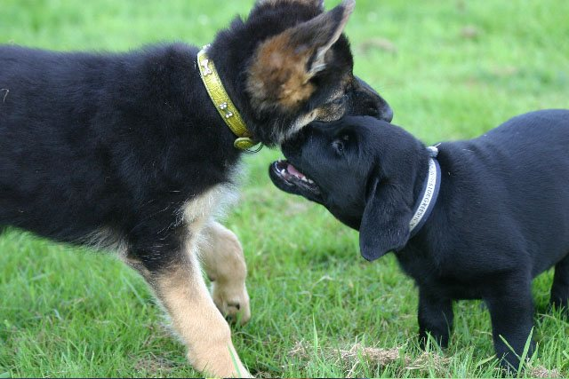
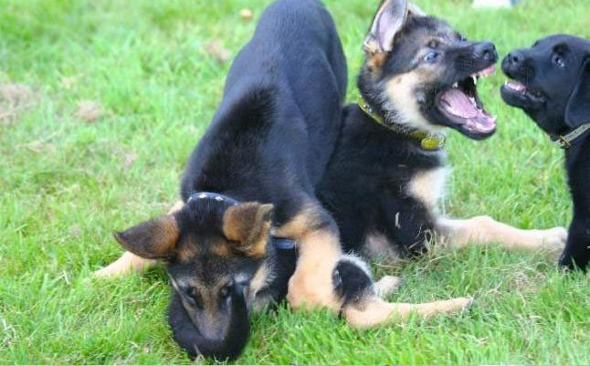
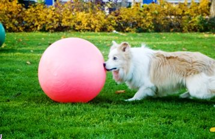
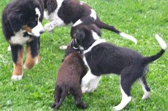
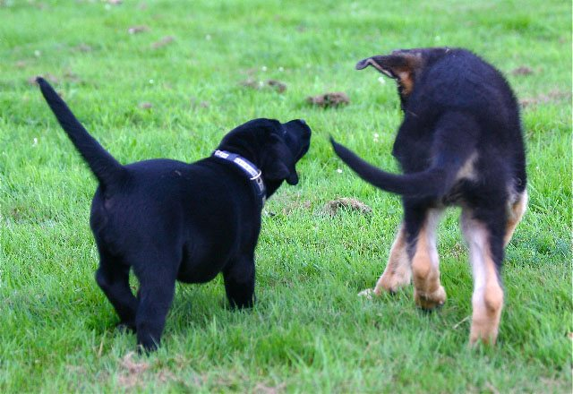

Puppycursus
Vanaf 7 weken. Basiscommando's, zindelijkheid, bijtgedrag en sociaal spelen met andere pups.
Cursussen

Vanaf 7 weken. Basiscommando's, zindelijkheid, bijtgedrag en sociaal spelen met andere pups.

Vanaf 6 maanden. Het goede contact met uw hond staat centraal, ook als de hond gaat puberen. Met een gratis intakegesprek.

Uw hond drijft grote ballen in een doel. Geschikt voor elk ras, van jong tot oud.

Individuele begeleiding bij gedragsproblemen, op het veld of met thuistraining.
| Socialisatiecursus voor pups vanaf 7 weken | € 20 |
|---|---|
| Puppycursus, 12 weken | € 85 |
| Socialisatiecursus en puppycursus samen | € 95 |
| Gehoorzaamheidstraining pubers, 12 weken | € 115 |
| Treibball, 10 lessen | € 115 |
| Individuele begeleiding, per half jaar | € 210 |
| Thuistraining met onze gedragstherapeut, per uur, plus reiskosten | € 50 |
U betaalt contant bij inschrijving of vooraf per bank. Pinnen kan niet op het veld.
| Zaterdagochtend | 09.00 tot 12.00, groepen per uur voor pups en voor honden vanaf 6 maanden |
|---|---|
| Woensdag | Puppygroep, vraag naar de actuele tijd |
| Rond kerst en de jaarwisseling | Twee weken geen lessen |
Uw pup is minimaal 7 weken oud en heeft op 6 weken de eerste inenting gehad. Neem het inentingsboekje mee.
